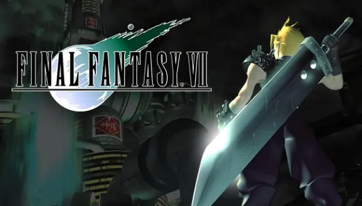
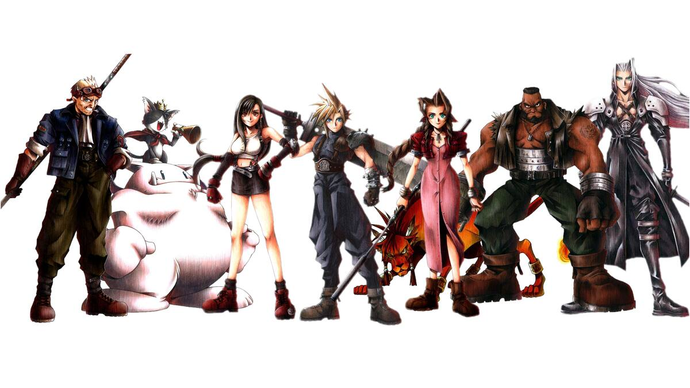
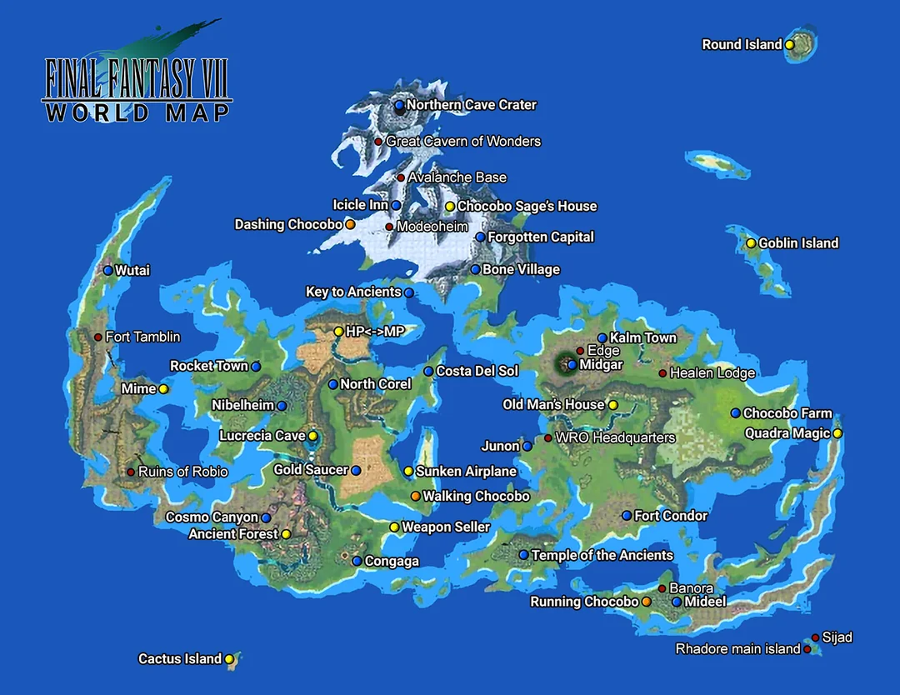

¿Qué es Final Fantasy VII?
Final Fantasy VII es un videojuego de rol desarrollado por
Square y publicado originalmente en 1997. Su historia sige
a Cloud Strife, un antiguo miembro de SOLDADO que se une al
grupo ecoterrorista Avalanch para luchar contra la compañía
Shinra. Durante su aventura descubrirá sectretos sobre su
pasado y tendrá que enftrentarse a Sephiroth.
El universo de Final Fantasy VII

Personajes principales
El juego cuenta con protagonistas muy conocidos dentro del
mundo de los videojuegos. cada uno tiene su propia historia
y personalidad.

- Cloud Strife: Protagonista principal de la aventura.
- Sephiroth: Uno de los principales antagonistas.
- Aerith Gainsborough: Joven con un papel importante en la istoria.
- Tifa Lockhart: Amiga de la infancia de Cloud y luchadora.
- Batter Wallace: Líder del grupo Avalancha.
- Red XIII: Criatura inteligente que acompaña al grupo.
- Cid Highwind: Piloto que sueña con viajar al espacio.
- Cait Sith: Personaje con apariencia de gato que acompaña al grupo.
Información general del juego
| características | Información |
|---|---|
| Nombre | Final Fantasy |
| Año de lanzamiento | 1997 |
| Desarrolladora | Square |
| Género | Juego de rol (RPG) |
| Plataforma original | PlayStation |
Lugares importantes
- Midgar: ciudad controlada por la compañia de Shinra.
- Nibelheim: Pueblo relacionado con el pasado de Cloud.
- Gold Saucer: Gran parque de atracciones.
- Cosmo Canyon: Lugar relacionado con el conocimiento del planeta.
